低温調理肉会 2017
低温調理肉会 2017
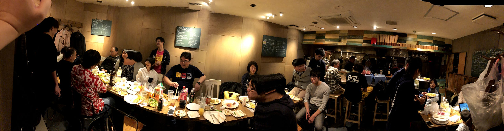
去る11/18のことですが、来年 builderscon tokyo 2018というのをやるにあたって、大量の肉を低温調理した（え？）
builderscon tokyo 2018 | Sep 6-8, 2018 / at Kyouseikan, Keio University. | 知らなかった、を聞く - buildersconは技術を愛する全てのギーク達のお祭りで…2018.tokyo.builderscon.io
半分冗談で、半分本当です。技術カンファレンスのbuilderscon tokyoを来年も開催する予定なのは本当で、活動を開始しています。
buildersconはひとつの技術に偏らず、様々な方面からの話を聞きたい！というカンファレンスです。現在はまだWeb系からの流入が多いのでそちらに比重が傾きがちですが、本質的にはなんでもOK。科学的に論じてくれるなら未知の領域の話も色々聞きたい！というカンファレンスです。builderscon tokyo 2017に関しては以下からどうぞ：
We successfully hosted builderscon tokyo 2017, in the lovely Kyoseikan building on Keio University.medium.com
来年のbuilderscon tokyo 2018ではゲストに 分散システムの堅牢性を研究する人、巨大映像コンテンツを管理する際の大規模キャッシュシステムを構築している人、そしてTBDの某日本人技術者をとりあえず予定しています。
大量の肉を低温調理したのも本当で、今回はbuildersconのスタッフや関係者を集めて、主宰である自分の趣味と景気づけを含めて低温調理肉を楽しむ会をやった、というのが話の流れ。人間、たまには自分一人では絶対に食べきれない量の肉を調理したいですよね？え、別にしたくならない？マジで？
過去の開催
なお以前いくつかBBQ会などを開催したことがあるので、気になる方は以下をご覧下さい。その他BBQ::buildersconで検索すると何個か当たります。
会場・仕入れ先
今回会場は偶然見つけた、新宿御苑のBROTHER飲食堂を貸し切りました。プロのキッチンを使えるのでテンションがあがります。また、生ビールを頼んでおけるのもポイントが高かった（後述）
BROTHER飲食堂/ブラザーインショクドウ (新宿御苑前/バル・バール)の店舗情報は食べログでチェック！【2014年６月新宿御苑前にオープン！】 【飲み放題あり / クーポンあり】口コミや評価、写真など、ユーザーによるリアルな情報が満…tabelog.com
お肉は主宰の御用達になりつつあるThe Meat Guyで揃えました。内容については後述しますが、日本の小売店ではなかなか見ないカットや肉が買えるのでお好きな人にはたまらないお店。今回ついに5歳の長男が箱を見ただけで「あ、これお肉だね！」って言って、すぐに中身がバレました。The Meat Guy、海外の肉で育った人にはマジでおすすめ。霜降り肉がなんぼのもんじゃ、俺らは赤身が好きなんだ！って人におすすめです。
The Meat Guy 公式サイト。スーパーでは手に入らないお肉・安心安全なお肉を、365日お届けします。www.themeatguy.jp
これまでは主にBBQで提供していたのですが、今回はここしばらくずっとはまっているanovaによる低温調理肉を提供することに主眼をシフトしてみました。
New: Anova Precision Cooker - WIFI 2nd Gen (900 Watts)が卓上IHクッキングヒーターストアでいつでもお買い得。当日お急ぎ便対象商品は、当日お届け可能です。アマゾン配送商品は、通常配送無…amzn.to
筆者のanovaな話はmakisanch（「牧さん家」）というシリーズにまとめてありますので、良ければご覧下さい
今回の用意した低温調理肉は以下のとおりです。30人用、13kg 前後。
- ラムショルダー 骨なしブロック (約 1.2kg x 3)
- グラスフェッドビーフ リブロース 骨なし 丸ごと (約 3kg x 2)
- カンガルー サーロイン ブロック (450g x 2)
- 厚切りポークチョップ (750g x 4)
- 鴨 ロース (チェリバレー) (220g x 4)
こいつらを全て低温調理します。
前準備
低温調理の良いところのひとつは、できあがるタイミングに肉の状態を合わせるのが比較的簡単なところだと思ってます。一旦火を通した後、真空パックのまま急速冷蔵をしておけば、また当日に温度を元に戻すためにもう一度湯煎することにより、クォリティを（ほとんど）損なわずに時間差で調理できるのです。今回はこのやりかたで、anova一本で準備して、三日前から肉を仕込み始めました。
木曜日の夜から、ラムをやり始めます。ラムを2本、60℃で12時間やっておきます。たっぷり目にお湯をはっておいて寝ておけばいいので簡単ですね。
金曜日の昼間には豚肉を仕込んでおきました。ちなみに木曜の時点で試しに少量のポークチョップを同時に調理したのですが、思っていたより淡泊な部位だったので、ここだけ急遽プラン変更して、ハナマサで極厚豚ロースというものを買ってきて入れ替えました。
新生児が家にいるので、夜はねむれねぇし、他に幼児二人の面倒を見る作業もあるので全ての作業が細切れになるのだが、anovaなら３時間かけて肉を調理しても完全に放っておける。というわけでanovaで肉をやる。そしてとにかく手を抜く。medium.com
金曜日の夜はラムをもう一本と、牛肉を6時間。
開催日の土曜日の真夜中には鴨ロース（4時間）を仕込み、諸々完成。カンガルーは短時間で済むので現地で仕込みます。
今回提供するお肉は基本的に低温調理したものを焼いて出すだけなので、調味料をぼちぼち用意しました。
- 塩
- 醤油
- ゆず胡椒
- チューブショウガ
- チューブニンニク
- バター
- ツブマスタード
あとは参加者の方が砂糖を用意してくれてて大変助かった。
これに念のための使い捨て皿、コップ、箸等を用意して、いざ出陣。13kgの肉ってスゴいですよ、みなさん…
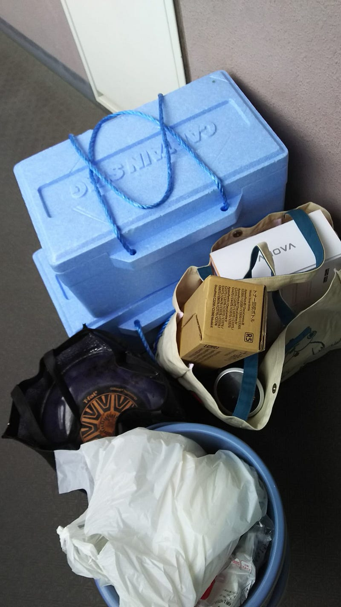
ちなみにこの写真ではanovaが3台あります。念のため2台借りておいたのですが、前準備の段階では使いませんでした（ブレーカーが落ちるのが怖かった）
Let The Party Begin
朝10時に会場入りして、台所の使い方について軽いレクチャーを受けて、いざ戦闘開始です。
今回は会場側に前持って生ビールをお願いできるという仕組みがあったので、生ビールを二樽分お願いしておきました。このため、朝10時から生ビールが延々と飲めるというビールクズな感じになりました。
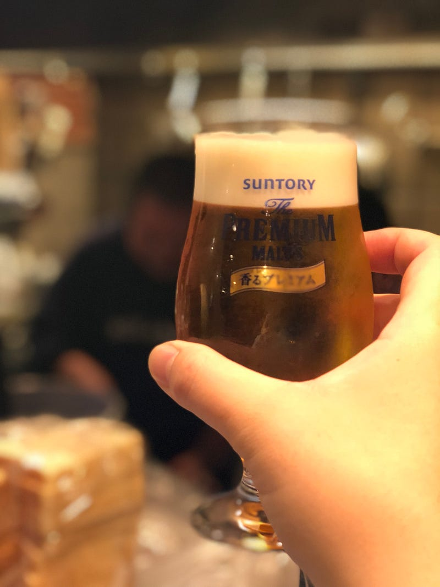
料金システムとしては今回は参加費1500円（会場費）、肉代は主宰持ち。ビールは飲まない人もいるだろうということで飲む人だけ、自分が飲む量に合わせてお気持ちをいただく、という形にしました。なお、肉以外の飲食料品は主宰側からは一切準備しておりません。一切です。野菜の一切れも持って行きませんでした。なので、肉とビール以外の食品は参加者が食べたいと思う物をめいめい持って来てもらう、という形です。
肉は当日調理するものと、温度を戻すためのものということで、anova2台体制で。ガンガンanovaが動作しているなかなかおもしろい光景となった。
牛肉
肝心の肉ですが、まずはとりあえず57℃程度まで温度を戻した牛肉を軽く焼き、ローストビーフの形で攻めました。この牛肉は低温調理してる時点で、「きのう何食べた？」9巻に載っている佳代子レシピっぽいもので味付けしてあります。低温調理を始める際にジップロックに醤油、酒、水、そして薄切りのニンニクを入れて一緒に湯煎した、ということですな。
参加者が持って来てくれたレタスでなんとなくインスタ映えを狙います（が、適当な盛りつけなので…）。
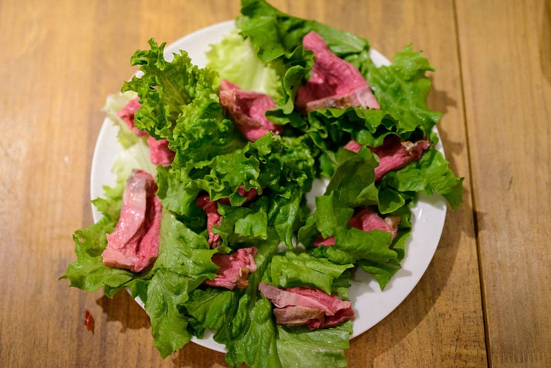
味はもうひと味… という感じ。多分サイズが大きくなるにつれ（つまり外側にしか味が染みない分）、濃いめの味付けにする必要があるのでしょう。（なんせ以下の写真のサイズ…）
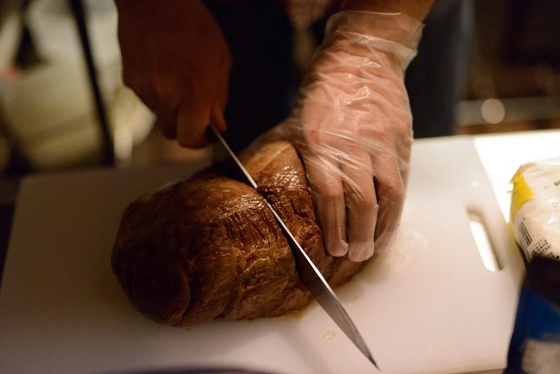
今回の味付けは半分サイズならもっとよかったはず。会場の人には適当にショウガ醤油等で調整するように指示しましたが、自分はずっとキッチンにいたのでどう消費されていたのかわからず…
カンガルー
カンガルーは以前自分で試した通り、1時間前後牛ヒレステーキと同じ感じで火を入れてやきます。デミグラスソースを添えてはい、どうぞ。やわらかくてジューシーです。
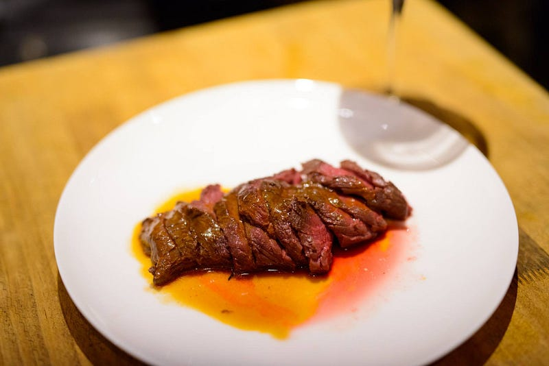
カンガルー肉はぱさつくとあちこちに書いてあるのですが、むしろ自分は低温調理ものしか食べたことないのでぱさつくとどうなるのか知りたい…
ラム肉
ラムと言えばジンギスカンでの薄切り肉やラムチョップを連想する人が多いと思いますが、あの風味がお好きな人にはショルダー肉は是非おすすめしたい。
今回は小林銅蟲の「めしにしましょう」3巻にあるガリバタステーキを基本にしてるのだけど、まずニンニクをいれていないのと、大きな違いとして個人的には脂身のないラム肉とか意味が分からないので、一口大に切った部分に脂身しかないような場合を除いてほぼそのまま提供した、というところか。
というわけで、一口大に切ったラム肉をバターと醤油で炒めて
はい、どうぞ。
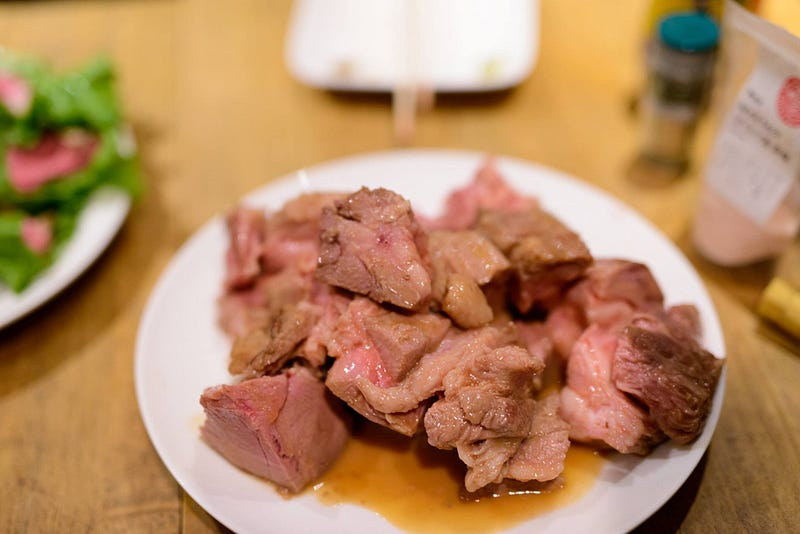
なおこの写真は写真用にやさしい盛り方をしたバージョンで、本来はもっとビジュアルインパクト強いです。
豚肉
低温調理して一番コストパフォーマンスが高いのは確実に豚肉です。それを証明するのがこの豚ロース。厚切り肉で作るのがポイント。4時間低温調理して、さっと焼くだけで分厚く切っても簡単に食べられる、ジューシーな豚肉が完成する。
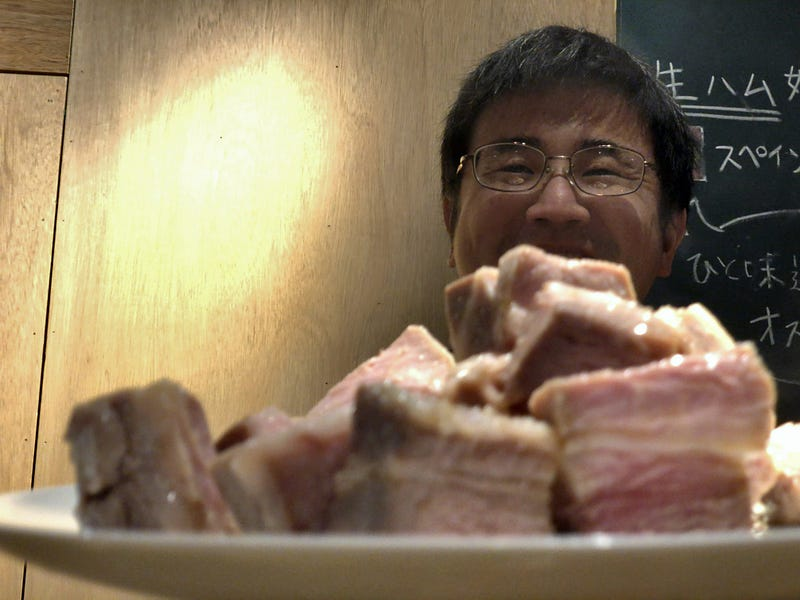
この豚肉の食べ方のいち押しは粒マスタードかショウガ醤油。うまいぞー。
詳細は前述のリンクからどうぞ。
鴨肉
実は明らかに一番おいしかった、そして人気があったのが一番量が少なかった鴨肉。
鴨はギリギリの温度を狙って4時間調理した上、現場でもう2時間ほど湯煎して温度を戻し、それをオリーブオイルで皮目を焦がして提供した。こうすると見た目はレアだけど、ちゃんと火の通ってる超旨い鴨肉になります。参考にしてるのはいつも使ってるこのサイト
As a meat that is best served medium rare, duck breast makes an ideal candidate to cook sous-vide. By cooking it at 135…www.seriouseats.com
もちろんこれだけでもうまいのだけど、今回はプロ仕様キッチンを使えたのが大きい。火力が強く、鴨の皮目がパリパリにキレイに焼ける…！これまでこんなに美しい色に鴨を焼けた事は一度たりとも無い… 火力強いってすげええええ。
そしてうまいものの宿命なのですが、自分も焦ってたし、皆様もがっついていたため、キレイな写真が全然ないのですね！（笑）
とりあえず肉の感じがわかる写真を以下に使わせてもらいました！
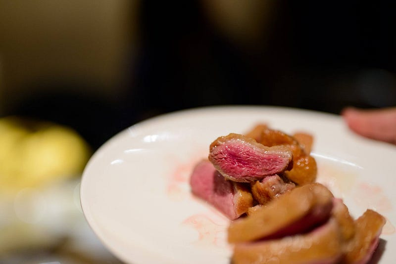
Extras
肉は以上で終了だったわけですが、皆様に色々持って来てもらったものがあり、その中異彩を放っていたのをいくつか紹介します。
パン、そして鴨脂まみれパン
まず、パン。これはうまいパンを持って来くれた人がいたので、それで作ったローストビーフサンドは最高だった。
しかしそれ以上に「頭が悪くなりそうだけど異常にうまい」感じだったのが、即興プレイで作った「鴨の脂と塩で焼いたパン」。パンが鴨の皮から流れ落ちた脂を吸って異常にうまかった。
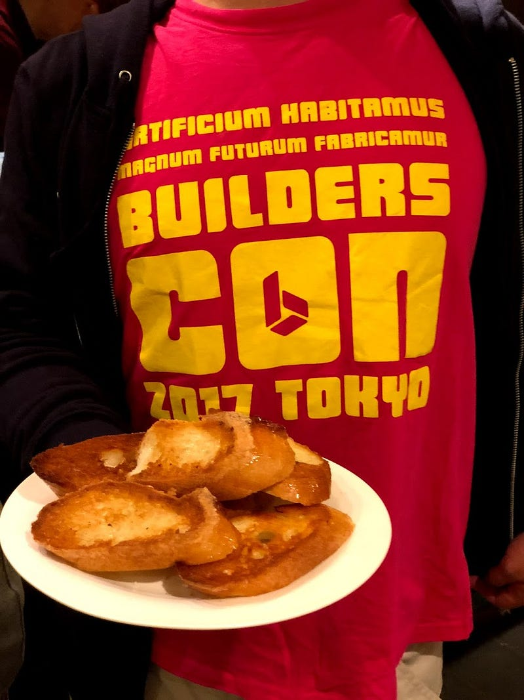
フルーツ
僕はシュラスコが大好きなので、シュラスコに誰かを連れて行くと色々システムや、アドバイスを説明するのですが、その中で「焼きパイナップルは肉の消化に良い」というのがあります。なお、以下私のシュラスコ超入門資料。
そうしたら今回は生パイナップルが三つ持ち込まれました。正気か？
施設的に焼きパイナップルは無理なので、まず生のパイナップルを提供。最初自分が食べた部位が酸っぱかったので、「これは一手間かければさらに甘くなるのでは？」と思い（ちなみにこのあと食べた部位は生でも普通に甘かったので、ただの偶然だった）、フライパンで熱しつつ、バターをパイナップルにまとわせる、という事をした。
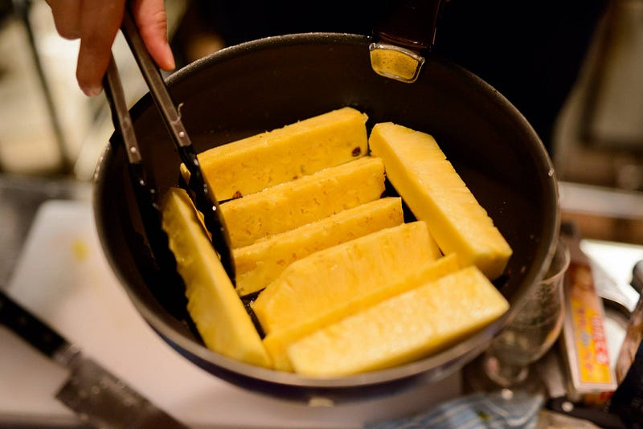
温かいパイナップルもやっぱりうまい。
そして、同じノリで、誰かが持って来たバナナもバターを絡めてやった。こっちは絡め終わってから、砂糖を振りかけ、食べた時にじゃりじゃりする感じを狙いました。バナナの写真は上のほうにすでに出てるので割愛。
宴の終わり
そんなわけで、午前10時から午後4時まで、調理しまくり、食べまくり、飲みまくった会でした。定期的な発作のような自分の「肉を大量に焼きたい！」欲もちゃんと昇華できました。参加してくれた皆様に感謝。
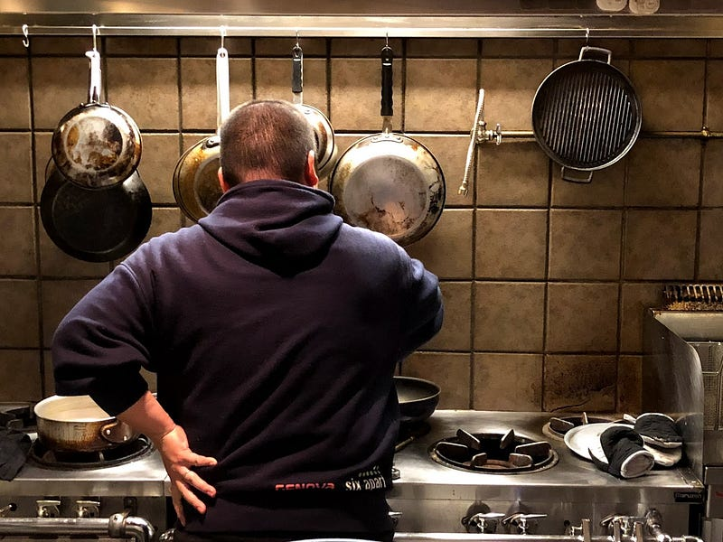
結果的に会場の皿等も含め備品も一通り使わせてもらったんですが、やはりこういうざっくばらんな感じの会の場合は補助用に使い捨て食器類を持ってると良いという感じがしました。さっと皿がでない時もあるし、「今これに陶器の皿使うほどじゃ…」って時もあるし。
あと、フライパン等は貸してくれる事はわかっていたのですが、それでも自分のを持って行きました。他人様のフライパンは焦がすのが怖くてつかえねぇ。
最後のほう、koronさんとuessyさんが人間食洗機になっててくれて、大変助かりました。あれがなかったら最後きっときつかった…
あと最終的には新たに何人か低温調理ファンが増えてくれたような気もするしそれなりに旨い物を提供できた自信はあるので、主宰も大変満足でした。
次回もまたなにか旨い物を大量調理する機会を見つけて会を開きたいと思います（今のところ『鴨を食べ尽くす』という趣旨で鴨肉、フォアグラを使って色々やる、というのと、『酵素で安い肉をおいしく食べる』というのを考えてる）。
また次の機会があれば、是非参加してください！参加の資格は 会について#builderscon タグをつけて発言したり、ブログを書いてもらうことだけです :D
それではまたいつかの機会に！